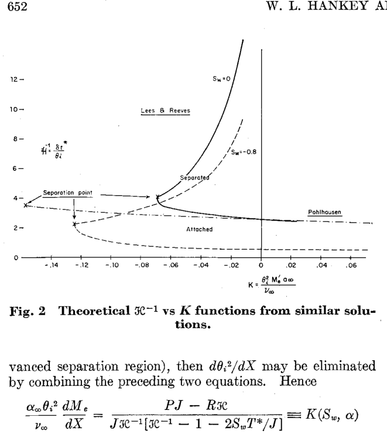
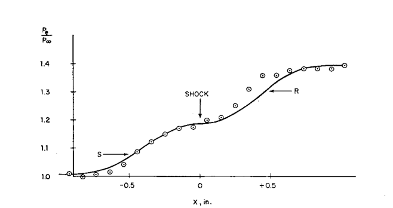
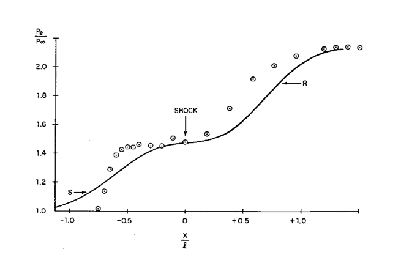
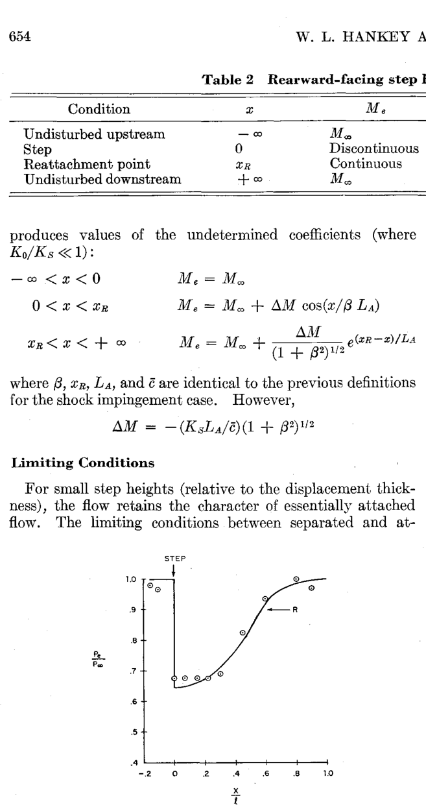

01中文摘要
对Lees-Reeves的超声速分离与再附层流干扰方法进行简化，通过若干近似把控制方程化为一个常系数二阶线性微分方程，其标准解可按边界条件用于不同问题。文中求解两个算例：平面激波入射层流边界层和超声速后向台阶，计算压力分布并与实验比较。考虑所作假设后，二者吻合相当好，说明在不必使用Lees-Reeves繁重数值积分时，本方法可给出满意的工程结果。
02阅读说明
类型：1967 年 AIAA Journal 研究论文（4 页，含 5 幅图、2 张表）。材料：bundle 全文 + 原 PDF 第 1–4 页；bundle 是双栏扫描 OCR，公式与符号破损严重，关键公式已对照 PDF 页面图像逐式核对，仍有个别符号（如文中用花体 𝒦^{-1} 表示 δ_i*/θ_i、θ_i* 与 θ_i 的下标）受印刷质量限制，标注为无法确认。 文章类型：期刊
03一句话核心与三句话摘要
把 Lees–Reeves 积分方程简化为单个常系数二阶线性 ODE，给出激波入射与后向台阶层流分离的闭式压力分布。
- 作者把 Lees–Reeves 的动量与一阶矩积分方程，在 δ*/θ 近似常数、L 与 c 在积分区间内为常数等条件下，合并为关于外部马赫数 M_e 的单个二阶常系数线性常微分方程。 原文明确
- 对激波入射与后向台阶两类流动，作者用分离点、激波入射点/台阶、再附点的匹配条件得到分区闭式解，并与实验压力分布对比，再附点附近最大误差分别为马赫数 2% 与 3%。 原文明确
- 该理论把分离区压力平台解释为 𝒦^{-1}(K) 双值性引起的分支切换，并给出分离判据与台阶极限条件，适合在不宜采用 Lees–Reeves 数值迭代时作工程快速估算。 AI概括
04核心内容清单
| 要点 | 类型 | 重要性 | 原文依据 | 属性 |
|---|---|---|---|---|
| Lees–Reeves 的三个联立 ODE 可简化为单个二阶常系数线性 ODE：L² d²M_e/dx²−(M_e−M∞)=0。 | 核心方程 | A | p.652，未编号公式 | 原文明确 |
| 附着流与分离流分别对应指数解与三角函数解，判据是 d𝒦^{-1}/dK 的符号。 | 解的结构 | A | p.652，Attached flow / Separated Flow 两式 | 原文明确 |
| 𝒦^{-1}=δ_i*/θ_i 在相似/反相似剖面下近似常数（±5%），是消去 θ 导数、封闭方程的关键。 | 关键假设 | A | p.651–652，Fig.1 | 原文明确 |
| 同一 K 对应附着与分离两个 𝒦^{-1} 值，这一双值性产生分离区“著名的压力平台”。 | 机制 | A | p.652，Fig.2 | 原文明确 |
| 激波入射解由四个分区组成，分离点与再附点处 M_e、M_e' 连续而 M_e* 间断，K 分别取 K_S、K_S，入射点 K0→0。 | 匹配条件 | A | p.652–653，Table 1 | 原文明确 |
| β²=(d𝒦^{-1}/dK)_S/[−(d𝒦^{-1}/dK)_A]−1，x_R/L_A=−x_S/L_A=β tan⁻¹β。 | 参数关系 | A | p.653 | 原文明确 |
| 产生分离所需的最小激波强度为 ΔM>−(K_S/c)2L_A；否则 β=0、无压力平台。 | 分离判据 | A | p.653，Separation Condition | 原文明确 |
| 后向台阶解与激波入射解共用同一 ODE，但台阶处 M_e、M_e'、M_e* 均间断，剖面瞬时改变而连续性与动量守恒。 | 边界条件 | A | p.653–654，Table 2 | 原文明确 |
| 后向台阶的分离极限为 ΔM≥−K_SL_A/c，更小台阶高度给出无分离指数解。 | 极限条件 | B | p.654，Limiting Conditions | 原文明确 |
| 闭式解与实验的最大偏差在再附点附近，分别为马赫数 2% 与 3%，但再附区压力梯度偏缓。 | 验证结果 | A | p.653，Figs.3–4 | 原文明确 |
| L_A 由 𝒦^{-1}–K 曲线斜率、平均动量厚度、平均马赫数与 dν/dM 共同决定；β 由分离/附着两支的斜率比决定。 | 参数定义 | B | p.653，L_A 关系式 | AI概括 |
05引言：研究问题与领域缺口
研究问题是平面激波入射到平板层流边界层以及后向台阶造成的超音速层流分离。作者指出，Lees 与 Reeves 的方法必须同时求解动量、动量矩与 Crocco–Lees 连续性三个常微分方程，并用迭代匹配激波入射点上、下游区域，计算繁琐（p.651）。本文的目标是保留其主要物理机制，通过简化假设把方程组化为可闭式求解的单个方程，以便在工程设计中快速给出压力分布（p.651）。
06流动条件与几何构型
| 项目 | 数值/描述 | 依据 | 备注 |
|---|---|---|---|
| 流动类型 | 二维定常超音速层流平板边界层/激波边界层干扰 | p.651，Introduction | |
| 工况 A：来流马赫数（Fig.3 激波入射） | M∞=2 | p.653，Fig.3 图注 | |
| 工况 A：雷诺数（Fig.3） | Re_δ=340 | p.653，Fig.3 图注 | OCR 作“Reo/Re_δ”，按图注与边界层厚度参考长度取 Re_δ；受限于材料，无法确认参考长度具体定义。 |
| 工况 A：激波强度参数（Fig.3） | β=2.13 | p.653，Fig.3 图注 | |
| 工况 A：附着区特征长度（Fig.3） | L_A=0.198 in | p.653，Fig.3 图注 | |
| 工况 A：壁温（Fig.3） | 图注含“T_w=0.1 T_0”一类条件 | p.653，Fig.3 图注 | OCR 作“T, = 0.1 Q8”，受限于材料，无法确认具体符号与数值。 |
| 工况 B：来流马赫数（Fig.4 激波入射） | M∞=2.45 | p.653，Fig.4 图注 | |
| 工况 B：雷诺数（Fig.4） | Re_δ=160 | p.653，Fig.4 图注 | |
| 工况 B：激波强度参数（Fig.4） | β=3 | p.653，Fig.4 图注 | |
| 工况 B：附着区特征长度（Fig.4） | L_A=0.173 in | p.653，Fig.4 图注 | |
| 工况 C：来流马赫数（Fig.5 后向台阶） | M∞=2 | p.654，Fig.5 图注 | |
| 工况 C：雷诺数（Fig.5） | Re_δ=250 | p.654，Fig.5 图注 | |
| 工况 C：台阶强度参数（Fig.5） | β=4 | p.654，Fig.5 图注 | |
| 工况 C：附着区特征长度（Fig.5） | L_A=0.218 in | p.654，Fig.5 图注 | |
| 台阶高度 | h（符号给出，数值未提及） | p.653，Rearward-Facing Step | 文中只给出关系 δ_{0+}*=δ_{0−}*+h，未给具体数值。 |
| 比热比与壁面热条件 | γ、S_w、T* 以符号出现，数值未提及 | p.651，Nomenclature；p.652 | 文中未给出所采用的具体气体常数或壁温分布。 |
| 压力换算 | 由 M_e 经等熵关系得到压力 | p.653，Results 段 | |
| 分离区压力平台假设 | K0/K_S≪1 | p.652，Shock Impingement Case |
07核心现象与关键参数
| 参数 | 定义 | 数值 | 关系/说明 | 依据 |
|---|---|---|---|---|
| L_A | 附着区（及激波入射/台阶问题）的 ODE 特征长度 | 0.198 in（Fig.3）、0.173 in（Fig.4）、0.218 in（Fig.5） | L²=−(d𝒦^{-1}/dK) θ̄[1+((γ−1)/2)M̄²](dν/dM)（按原文关系式转录，符号受 OCR 限制） | p.653，Fig.3–5 图注与 L_A 关系式 |
| β | 分离区与附着区长度尺度之比；也用于 β² 关系 | 2.13（Fig.3）、3（Fig.4）、4（Fig.5） | β²=(d𝒦^{-1}/dK)_S/[−(d𝒦^{-1}/dK)_A]−1；x_R/L_A=−x_S/L_A=β tan⁻¹β | p.653 |
| ΔM | 激波前后外部马赫数差 | M∞−−M∞+（各工况数值未单列） | ΔM=M∞−−M∞+；分离判据 ΔM>−(K_S/c)2L_A | p.653 |
| K | 粘性-无粘耦合参数，K=c dM_e/dx | 分离点 K_S、入射点 K0→0 | K=c dM_e/dx；K0/K_S≪1 | p.651–653，Nomenclature 与 Table 1 |
| c | K 与 dM_e/dx 之间的比例参数（变换回物理平面后） | 常数（数值未给出） | K=c dM_e/dx | p.652–653 |
| 𝒦^{-1} | 相似/反相似剖面的形状参数，等于 δ_i*/θ_i | 在较大参数范围内近似常数，误差 ±5% | δ_i*/θ_i=𝒦^{-1}(K)，对 K 双值 | p.651–652，Fig.1–2 |
| θ_i*, δ_i* | Stewartson 变换坐标下的动量厚度与位移厚度 | 沿程变化，具体数值未列出 | δ*/θ=𝒦^{-1}+[(γ−1)/2]M²(𝒦^{-1}+1) | p.651–652，Nomenclature 与耦合关系 |
| x_S, x_R | 分离点与再附点坐标（激波入射点/台阶取 x=0） | 由 β、L_A 确定；具体数值未列出 | x_R/L_A=−x_S/L_A=β tan⁻¹β | p.653 |
| Re_δ | 以来流边界层厚度为参考长度的雷诺数 | 340、160、250 | 各实验工况的相似参数 | p.653–654，Figs.3–5 图注 |
| h | 后向台阶高度 | 符号 h，数值未提及 | δ_{0+}*=δ_{0−}*+h；(δ_{0−}*+h)/θ_{0+}=𝒦_0^{-1}+[(γ−1)/2]M∞²(𝒦_0^{-1}+1) | p.653–654 |
08方法与数据
采用 Lees–Reeves 的积分关系与相似/反相似速度剖面；由相似解给出的 𝒦^{-1}=δ_i*/θ_i 在较大参数范围内近似常数（±5%，Fig.1，p.651–652）。将动量方程与一阶矩方程联立消去 θ_i* 的导数，定义 K=c dM_e/dx，并把粘性位移厚度变化与无粘外部马赫数耦合，得到 L² d²M_e/dx²−(M_e−M∞)=0（p.652）。按 d𝒦^{-1}/dK 的符号区分附着（指数）与分离（三角）两支解；再用 Table 1、Table 2 的边界与匹配条件确定激波入射与后向台阶各分区的系数和分离/再附位置（p.652–654）。最后把 M_e 经等熵关系换算为压力，与 Ref.4、Ref.5 的实验数据比较（Figs.3–5，p.653–654）。
| 项目 | 内容 | 依据 | 备注 |
|---|---|---|---|
| 控制方程来源 | Lees–Reeves 的动量方程与一阶矩方程（另含 Crocco–Lees 连续性方程，本文通过简化避免联立求解） | p.651，Introduction 与 General Approximate Solution | |
| 速度剖面 | 分离区采用精确的相似/反相似速度剖面（Ref.1），而非 Pohlhausen 多项式 | p.651，Introduction | |
| 关键简化 | δ_i*/θ_i≈const（±5%）；dδ*/dx≫dθ/dx 与 θ dM/dx；L、c、dν/dM 在积分区间内取常数 | p.652，“Summarizing” 段 | |
| 方程封闭 | 消去 θ_i* 导数，定义 K=c dM_e/dx，得到 L² d²M_e/dx²−(M_e−M∞)=0 | p.652 | |
| 解的分支 | d𝒦^{-1}/dK<0 取指数解（附着）；>0 取三角解（分离） | p.652 | |
| 匹配方法 | 在分离点、激波入射点/台阶、再附点施加 M_e、M_e' 连续与 M_e* 间断条件，并列 10 个代数方程求 10 个未知量 | p.652–654，Table 1–2 | |
| 压力换算 | 由闭式 M_e(x) 经等熵关系计算压力分布 | p.653 | |
| 实验对比 | 与 Ref.4（激波入射）和 Ref.5（后向台阶）的实验压力分布对比，读取再附区最大马赫数误差 | p.653–654，Figs.3–5 |
09核心推导与公式
利用相似/反相似剖面把 δ*/θ 近似为常数，从而在 Lees–Reeves 的动量与一阶矩方程之间消去 θ 的导数；再用 K=c dM_e/dx 将粘性位移厚度增长与无粘外部马赫数耦合，最终得到只含 M_e 的二阶常系数线性 ODE。分离与附着由 d𝒦^{-1}/dK 的符号区分。
关键假设
- 二维定常可压缩层流边界层，物性沿横向积分后以一维积分关系描述。
- 分离区速度剖面采用 Ref.1 的精确相似/反相似剖面。
- δ_i*/θ_i=𝒦^{-1} 在较大参数范围内近似常数（±5%，Fig.1）。
- dδ*/dx 远大于 dθ/dx 与 θ dM/dx，因此只保留位移厚度变化的主导项。
- 特征长度 L 在积分区间内近似不变。
- 参数 c 与 dν/dM 在积分区间内取常数。
- 压力与外部马赫数之间采用等熵关系。
- 激波入射问题中假设分离区存在压力平台，K0/K_S≪1。
- 后向台阶处速度剖面瞬时改变，但连续性与动量守恒仍成立。
推导过程
原文以未编号公式给出两个积分关系。由于 1967 年双栏扫描 OCR 破损，下面的系数与上下标按 PDF 页面图像转录，个别系数受限于材料，无法确认；但方程结构（动量方程与一阶矩方程各含 θ_i*² 与 θ_i*³ 的导数）是明确的。
把 θ_i*² 的导数项组合成一个辅助参数 K(S_w,α)，它正比于 θ_i*² 与 dM_e/dX 的乘积。原文随后给出 K 的显式分式；由于 OCR 破损，这里只保留可确认的定义关系。
用 Stewartson 变换的逆变换把 dX/dx 与当地压力、α 联系起来；在物理平面中 K 可写成 c dM_e/dx，c 在积分区间内取常数。
把外部流线的偏转角与 Prandtl–Meyer 角的变化联系起来，位移厚度的流向增长率近似正比于 M_e−M∞。
用 Fig.1 的相似解相关式，把 δ*/θ 写成 𝒦^{-1} 与马赫数的显式关系。
在 𝒦^{-1}=δ*/θ≈const 的近似下，δ* 的变化主要由 𝒦^{-1} 随 K 的变化承担；用链式法则把 d𝒦^{-1}/dx 写成 (d𝒦^{-1}/dK)c(dM_e/dx)。
将上一步代入耦合关系并整理，得到本文的核心方程；L² 由 𝒦^{-1}–K 曲线斜率、平均动量厚度、平均马赫数与 dν/dM 组成，因 OCR 破损，L² 的完整表达式受限于材料，无法逐符号确认。
当 d𝒦^{-1}/dK<0 时 L²<0，解为指数型，对应附着流；当 d𝒦^{-1}/dK>0 时解为三角型，对应分离流。两支的系数由边界与匹配条件确定。
把 x=0 取在激波入射点，分离点为 x_S、再附点为 x_R。四个区间分别用指数衰减、余弦、余弦、指数衰减表示；匹配时要求 M_e 与 M_e' 连续、M_e* 间断，K 在分离/再附点取 K_S，在入射点 K0→0。
把四区解代入匹配条件，得到 β 与两支 𝒦^{-1} 斜率之比的关系，以及分离点、再附点的对称位置。
激波强度不足时不存在分离；临界条件由 β=0 给出。后向台阶用同一 ODE，但台阶处 M_e、M_e'、M_e* 均间断；由控制体连续性与动量守恒得到台阶前后厚度关系，再解出分区压力。
适用边界：推导依赖相似/反相似剖面的经验相关、δ*/θ 常数、L 与 c 常数、K0/K_S≪1 等假设；只适用于二维定常层流；实验验证仅三个工况（M∞=2–2.45，Re_δ=160–340）；L² 的完整符号表达式在 OCR 中破损，本文只能确认其结构；不能直接外推到湍流、非定常、三维或强分离。
10结果：主要发现与关键证据
激波入射情形得到四个分区的闭式解：远上游指数衰减区、分离区余弦区、入射点下游余弦区、远下游指数衰减区；并给出 β²、x_R/L_A=−x_S/L_A=β tan⁻¹β、ΔM=M∞−−M∞+ 以及 L_A 与 𝒦^{-1} 曲线斜率的关系（p.652–653）。分离判据为 ΔM>−(K_S/c)2L_A；不分离时 β=0、x_R=0=−x_S（p.653）。与实验比较，Fig.3（M∞=2, Re_δ=340, β=2.13, L_A=0.198 in）再附点附近最大误差为马赫数 2%，Fig.4（M∞=2.45, Re_δ=160, β=3, L_A=0.173 in）为 3%，总体吻合良好，但近似解在再附区给出的压力梯度比实验偏缓（p.653）。后向台阶情形用同一方程、改换边界条件，得到 ΔM=−(K_SL_A/c)(1+β²)^{1/2} 的分区解，Fig.5（M∞=2, Re_δ=250, β=4, L_A=0.218 in）吻合“better than expected”；并给出小台阶极限 ΔM≥−K_SL_A/c 与无分离解（p.654）。
| 发现 | 证据 | 证据类型 | 强度 | 位置 | 属性 |
|---|---|---|---|---|---|
| 闭式理论能复现激波入射的实验压力分布；最大误差出现在再附点附近，Fig.3 为马赫数 2%，Fig.4 为 3%。 | Fig.3 工况 M∞=2、Re_δ=340、β=2.13、L_A=0.198 in；Fig.4 工况 M∞=2.45、Re_δ=160、β=3、L_A=0.173 in；作者逐图给出最大误差位置与数值。 | 定量验证 | 强 | p.653，Figs.3–4 | 原文明确 |
| 近似闭式解在再附区给出的压力梯度比实验偏缓，Lees–Reeves 的精确解略优。 | 原文明确写道 agreement is generally good “with the exception that the approximate solution produces a pressure gradient less steep than the experiment in the reattachment region”，并称 Lees–Reeves 解 slightly superior。 | 误差特征 | 强 | p.653 | 原文明确 |
| 分离区压力平台来自 𝒦^{-1}(K) 的双值性：同一压力梯度可对应附着或分离两个剖面，平台条件 K0/K_S≪1 使压力近似不变。 | Fig.2 给出两条不同 S_w 的 𝒦^{-1}–K 曲线及 Pohlhausen 对比，原文称“It is this feature that produces the ‘famous’ pressure plateau”。 | 机制 | 强 | p.652，Fig.2 | 原文明确 |
| 存在显式分离判据：ΔM>−(K_S/c)2L_A；激波更弱时 β=0、x_R=0=−x_S，流动保持附着且无压力平台。 | 原文在 Separation Condition 段给出该不等式，并给出不分离时的两支指数解。 | 判据 | 强 | p.653 | 原文明确 |
| 后向台阶可用同一 ODE 与改换后的边界条件求解；Fig.5 的实验对比“better than expected”，并给出小台阶极限 ΔM≥−K_SL_A/c 与无分离解。 | Table 2 列出台阶、再附点与远场的匹配条件；Fig.5 工况 M∞=2、Re_δ=250、β=4、L_A=0.218 in；Limiting Conditions 段给出临界值与无分离指数解。 | 推广与极限 | 中 | p.653–654，Table 2、Fig.5 | 原文明确 |
| 相似/反相似剖面给出的 𝒦^{-1} 在较大参数范围内近似常数（±5%），这是方程可封闭的关键经验依据。 | Fig.1 给出不同 α 下的 𝒦^{-1} 分布，作者据此取 δ_i*/θ_i≈const。 | 关键假设验证 | 强 | p.651–652，Fig.1 | 原文明确 |
| L_A 与 β 并非自由拟合参数：L_A 由 𝒦^{-1}–K 曲线斜率、平均动量厚度、平均马赫数与 dν/dM 决定，β 由分离/附着两支斜率之比决定。 | 原文在给出四区解后列出 β² 与 L_A 的关系式。 | 参数来源 | 中 | p.653 | AI概括 |
11机制解释与论证链
核心机制是“把剖面形状与压力梯度脱钩、再以双值关系重新挂钩”。相似/反相似剖面使 δ*/θ=𝒦^{-1} 近似为常数，于是动量方程与一阶矩方程中的 θ 导数可消去，粘性效应被压缩为一个参数 K=c dM_e/dx。但 𝒦^{-1}(K) 是双值的：同一个 K 对应附着与分离两个剖面。外部无粘流通过 dδ*/dx∝(M_e−M∞) 与粘性区耦合，代入后得到 L²M_e''−(M_e−M∞)=0。附着支为指数型，上游扰动在长度 L 内衰减；分离支为三角型，扰动在 L 内振荡。分离点处解从附着支切换到分离支（K 取 K_S），平台区内 K0≈0，压力近似不变，于是形成“著名的压力平台”；再附点处再切回附着支。β 是分离区与附着区长度尺度之比，x_S、x_R 由两区解的斜率和值匹配确定。
12讨论：结论、贡献与局限
作者认为，在不需要 Lees–Reeves 繁琐数值解的场合，该闭式理论可作为满意的工程设计工具；其价值在于显式给出压力平台、分离区长度和再附位置随 β、L_A、ΔM 的变化（p.653–654）。讨论中也明确了代价：结果依赖相似/反相似剖面的经验相关、δ*/θ 常数、L 与 c 常数、K0/K_S≪1 等假设；近似解在再附区压力梯度偏缓，精确的 Lees–Reeves 解略优；实验验证只有三个低雷诺数层流工况。作者指出，只要正确解释 𝒦^{-1}–K 曲线，方法可推广到其他激波/边界层干扰情形（p.654）。
作者结论
在不宜采用 Lees–Reeves 繁琐数值迭代的工程问题中，本文的近似闭式理论能给出满意的压力分布：激波入射情形再附点附近最大马赫数误差约 2%–3%，后向台阶情形与实验的吻合优于预期。理论显式给出压力平台、分离区长度、再附位置与激波强度/台阶高度的关系，并可推广到其他激波/边界层干扰，只要正确解释 𝒦^{-1}–K 曲线。
局限与未解决问题
仅适用于二维定常层流；依赖 Ref.1 的相似/反相似剖面经验相关与 δ*/θ≈const；L、c、dν/dM 在积分区间内取常数；激波入射解依赖压力平台假设 K0/K_S≪1；实验只覆盖 M∞=2–2.45、Re_δ=160–340 的三个工况；台阶高度、比热比、壁温等未系统给出；不能处理湍流、非定常、三维、强分离或大逆压梯度。
13对高速流动与工程的意义
把 Lees–Reeves 的多方程迭代问题降为单个线性 ODE，使激波/边界层干扰的压力分布、分离长度与再附位置可以用手算或少量代数运算快速估算；压力平台的双值性解释把“为何出现平台”从数值现象提升为剖面形状与压力梯度之间的结构性关系，对工程气动设计和分离控制具有直接价值。
14核心图件




15可引用原文素材
| 原文短句 | 可支持的观点 | 位置 | 使用建议 |
|---|---|---|---|
| “single second-order, linear differential equation” | 论文的核心简化：方程组降为单个二阶线性方程。 | p.651，摘要 | 核心贡献 |
| “satisfactory engineering results” | 作者对方法工程适用性的自我评价。 | p.651，摘要 | 结论定位 |
| “the “famous” pressure plateau” | 分离区压力平台是本文解释的关键现象。 | p.652 | 机制 |
| “two cases are possible (i.e., separated or attached)” | 同一 K 下存在附着/分离两支解。 | p.652 | 解的双值性 |
| “a pressure gradient less steep than the experiment” | 近似解在再附区的主要偏差方向。 | p.653 | 误差特征 |
| “2% in Mach number” | Fig.3 再附点附近的最大误差量级。 | p.653 | 定量验证 |
| “agreement is better than expected” | 后向台阶算例与实验的吻合程度。 | p.654 | 推广验证 |
| “proper interpretation of the 𝒦^{-1} vs K curve” | 方法推广的关键在于正确使用双值曲线。 | p.654 | 适用条件 |
16最终核验
| 核验项 | 结论 |
|---|---|
| 仅基于全文 | 仅使用 bundle 全文与原 PDF 第 1–4 页（未超过 6 页），未引入外部文献、教材推导或未给出的数值。 |
| A 级要点有依据 | A 级要点均有页码与图表/公式定位：核心 ODE、两支解、Table 1、β/x_R 关系、分离判据、2%/3% 误差、Fig.2 双值性均可回溯到 p.652–654。 |
| 属性标注 | three_sentence、core_points、findings 均逐条标注【原文明确】【AI概括】【AI推断】；AI概括仅用于组织原文信息，未把推断写成原文结论。 |
| 覆盖范围 | 覆盖 Introduction、General Approximate Solution、Shock Impingement Case、Rearward-Facing Step、Limiting Conditions、References 及 Figs.1–5、Tables 1–2；Nomenclature 用于符号定义。 |
| 无编造 | 未编造页码、图号、公式或数据；OCR 破损处（如 L² 完整表达式、Re_δ 定义、T_w 数值、θ_i* 下标）已明确标注“受限于材料，无法确认”或“文中未提及”。 |
需回原文确认
- L² 的完整符号表达式（含 𝒦^{-1}–K 斜率、θ̄、M̄、dν/dM 的具体组合）在 OCR 中破损，未能逐符号确认。
- Re_δ 的参考长度究竟是边界层厚度、动量厚度还是其他尺度，图注 OCR 不清。
- Fig.3 图注中的壁温条件（T_w=0.1 T_0？）与比热比、S_w、T* 的具体取值未系统给出。
- 压力平台假设 K0/K_S≪1 的定量适用范围未给出；强激波下平台假设失效时误差如何增长未讨论。
- 后向台阶的 h、初始 Blasius 剖面参数与实验工况未完整列表，难以独立复现 Fig.5。
- 方法对湍流、非定常、三维及大分离的适用性未验证。
17关联文献
依据标签、板块、构型与作者脉络自动关联，可据此追踪同一问题的前序与后续工作。
18引用格式
选择期刊风格后复制；出处保留原刊名。BibTeX 可直接用于 LaTeX。
引用格式
Hankey, W. L. & Cross, E. J. 1967 Approximate closed-form solutions for supersonic laminar separated flows. AIAA Journal. https://doi.org/10.2514/3.4043
PDF上传 PDF 并更新本页
本页缺少全文、摘要或图件时，可在浏览器本地补入 PDF。解析完全在本机完成，不上传网络；完成后会更新本页的 PDF 打开链接、原摘要、IMRaD 机器抽取、关键句与含图页面。复杂的公式语义与中文深度解读仍以原文和既有精读记录为准。